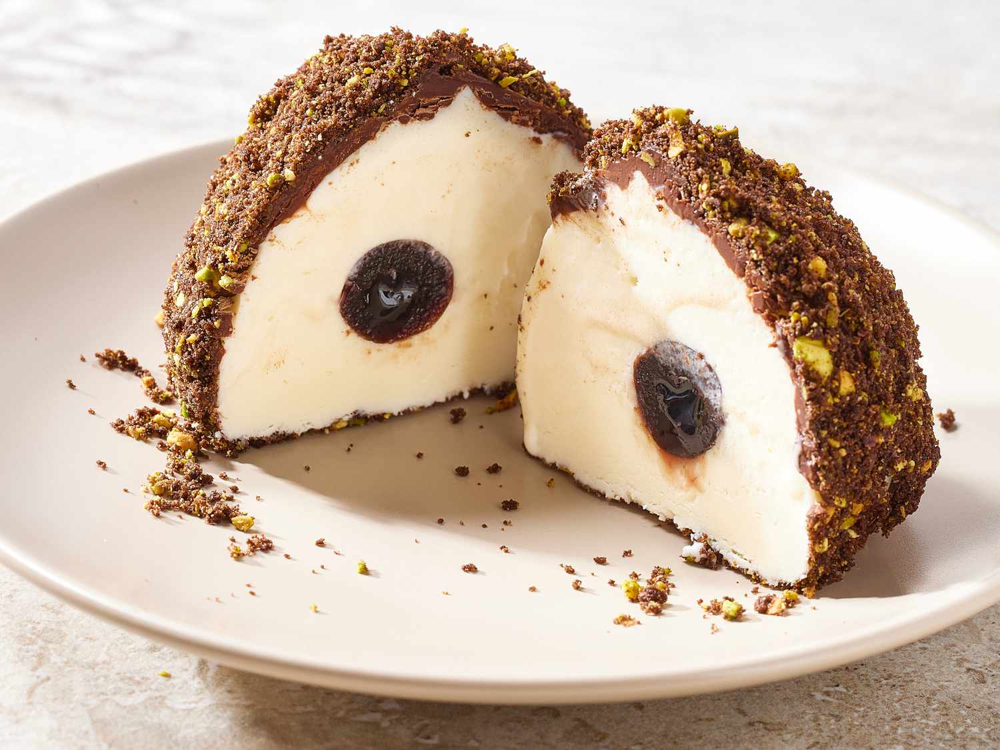

Odin Recipes - Tartufo

Description
Tartufo is an Italian dessert of gelato.
Originating in the municipality of Pizzo, Calabria, it takes the form of a ball that is composed of two or more flavors of gelato, often with melted chocolate inserted into the center.
Alternatively, frozen fruits are used.
The dessert is typically covered in a shell made of chocolate or cocoa, but sometimes cinnamon or nuts are used.
Ingredients
- 1 quart vanilla ice cream
- 8 maraschino cherries
- 2 cups semisweet chocolate chips
- 5 tablespoons unrefined coconut oil
- 36 chocolate wafer cookies (optional)
- 1/2 cup salted roasted pistachios (optional)
Steps
- Let ice cream stand at room temperature until slightly softened, about 10 minutes. Line 8 small bowls with plastic wrap, leaving a 3-inch overhang.
- Using a 2 oz. (1/4-cup) ice-cream scoop, place 1 scoop of ice cream into the bottom of each bowl.
- Gently press a maraschino cherry into the top of each ice-cream scoop, then top each with another 2 oz. (1/4-cup) scoop of ice cream.
- Working with 1 bowl of ice cream at a time, gather overhanging plastic, wrap it up around ice cream, and gently twist it to form a ball.
- Freeze until ice cream is firm and set, about 2 hours.
- Place chocolate chips in a large microwave-safe bowl, and microwave on HIGH in (30-second) intervals, stirring thoroughly between intervals, until melted, 3 to 4 minutes total.
- Whisk in coconut oil until the oil is completely melted and combined with the chocolate. Let cool slightly at room temperature, about 10 minutes.
- Meanwhile, pulse cookies and pistachios, if using, in a food processor until finely ground, about 15 quick pulses. Transfer to a shallow bowl, and set aside at room temperature.
- Remove an ice-cream ball from freezer. Remove plastic wrap, and place ice-cream ball on a wire rack set inside a rimmed baking sheet. Pour chocolate mixture over ice-cream ball, allowing it to thinly coat the top and sides.
- Transfer coated ice cream ball to a clean wire rack set inside a large, rimmed baking sheet in the freezer. Repeat process with remaining 7 ice-cream balls.
- Freeze for about 1 hour and serve whenever ready!